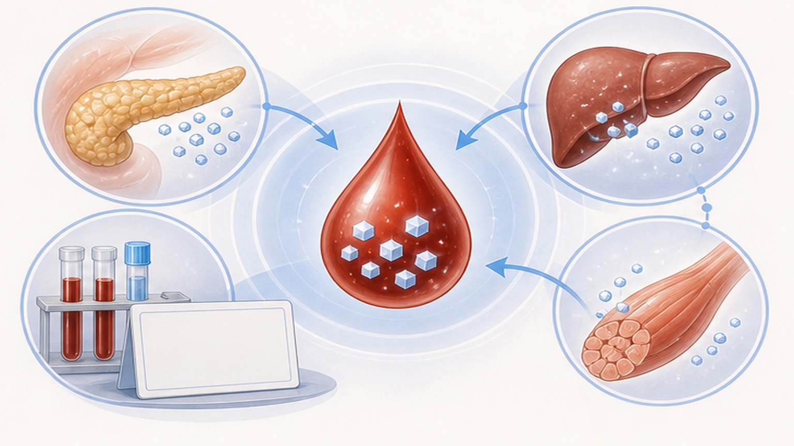
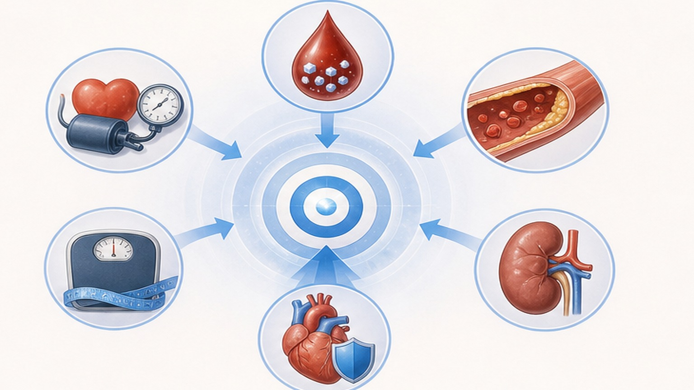
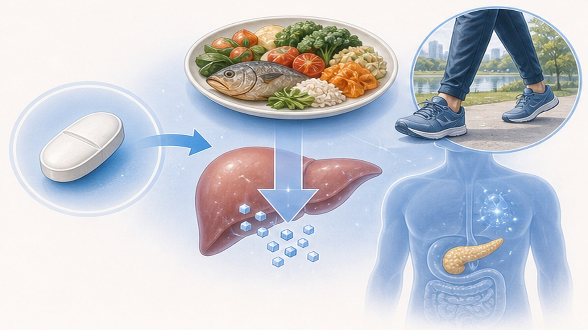
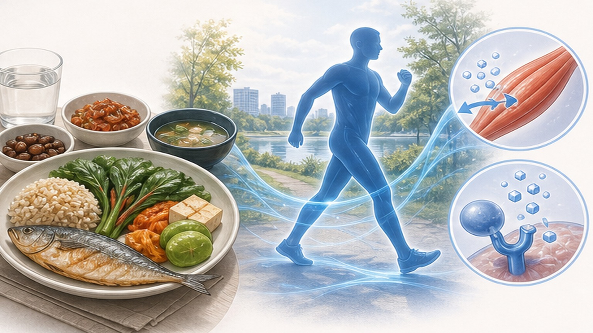

제2형 당뇨병,
혈관을 지키는 관리법
제2형 당뇨병 (Type 2 Diabetes Mellitus) — 진단 기준, 합병증, 약물·생활 관리
한국 성인 7명 중 1명이 당뇨병 — 더 이상 드문 병이 아닙니다
30세 이상 유병률 13.6%, 환자 약 600만 명 — 인지율·치료율·조절률 모두 개선 필요
제2형 당뇨병 (T2DM) 이란
인슐린 저항성 + 췌장 베타세포 기능 저하가 함께 일어나는 만성 대사질환
혈당이 만성적으로 높아진 상태 — 핵심 기전은 인슐린 저항성과 베타세포 기능 저하의 결합입니다.
내장지방이 늘어나면 간·근육·지방조직이 인슐린에 잘 반응하지 않게 됩니다(저항성). 췌장은 이를 보상하려 인슐린을 더 분비하지만 시간이 지나면서 베타세포가 지쳐 분비량이 줄어듭니다. 진단 시점에는 이미 베타세포 기능의 약 50%가 손실된 경우가 많아 조기 발견·조기 치료가 중요합니다.
당뇨병 진단 기준 — 한 가지만 충족되어도 진단
아래 4가지 중 1개 이상이 두 번 확인되면 당뇨병으로 진단합니다 (전형 증상 + 무작위 ≥ 200은 1회로 진단)

당뇨가 두려운 진짜 이유 — 6대 합병증
고혈당이 수년~수십 년 누적되면 미세혈관·대혈관·신경 손상으로 이어집니다
관리 목표 — 혈당·혈압·지질·체중 통합
대다수 성인 표준 목표. 연령·동반질환·저혈당 위험에 따라 개별화합니다

1차 약물 — 메트포민 + 생활습관 개입
진단 즉시 메트포민 시작. 심혈관·신장 위험 동반 시 SGLT2i·GLP-1RA 조기 병용 권장
메트포민 (Metformin) 은 40년 이상 안전성·효과·비용이 검증된 모든 환자의 1차 약물입니다.
간에서 포도당 신생합성을 억제해 공복혈당을 낮추고, 인슐린 저항성을 개선합니다. HbA1c를 약 1.0~1.5% 낮추며 체중을 늘리지 않고 저혈당을 거의 일으키지 않습니다. 500mg 1회 시작 → 1~2주마다 증량해 1,000~2,000mg/일까지. 소화기 부작용은 식사와 함께 복용 + 서서히 증량으로 줄입니다. eGFR < 30 또는 조영제 검사 전후엔 중단.

2차 약물 — 동반질환에 따라 선택
메트포민으로 부족할 때 또는 처음부터 동반질환이 있을 때 추가하는 4가지 주요 옵션
식사·운동 — 약물 못지않게 강력한 치료
접시법 + 주 150분 운동으로 HbA1c 평균 1~2%↓ — 진단 직후가 가장 효과적
- 접시법 — ½ 채소, ¼ 단백질, ¼ 통곡물
- 식이섬유 25g/일 — 채소·통곡물·콩
- 주 150분 중강도 유산소 + 주 2회 근력
- 식사 시간 일정하게 — 거르지 않기
- 물 충분히 — 무가당 음료 선택
- 혈당 자가측정 — 의료진과 패턴 공유
- 정제 탄수화물 — 흰밥·흰빵·국수 과다
- 가당 음료·주스 — 콜라·과일주스·믹스커피
- 야식·폭식 — 식후 혈당 급등
- 흡연 — 합병증 진행 2~3배
- 음주 과량 — 저혈당·간 부담
- 맨발 보행 — 발 손상 위험

즉시 내원 또는 응급실 — 놓치면 안 되는 경고 신호
아래 증상은 급성 합병증 또는 진행성 합병증의 신호 — 늦으면 입원·생명 위협
환자 실천 7가지 — 매일·매월·매년
루틴이 곧 치료. 아래 7가지를 꾸준히 하면 합병증 위험을 절반 이하로 낮출 수 있습니다
함께 관리하면 합병증 없이 평생 살 수 있습니다
진단 직후가 가장 중요합니다 — 첫 1~2년 적극 관리가 평생 합병증 위험을 결정합니다